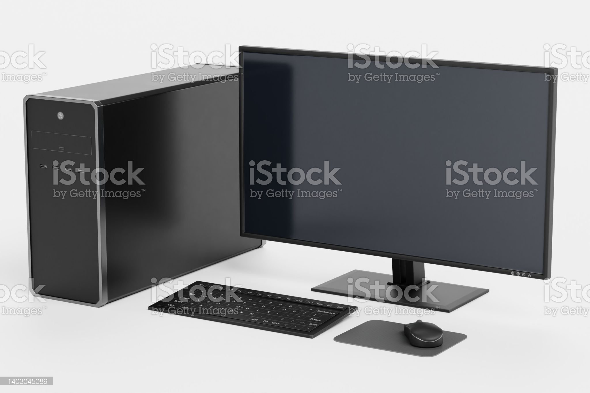
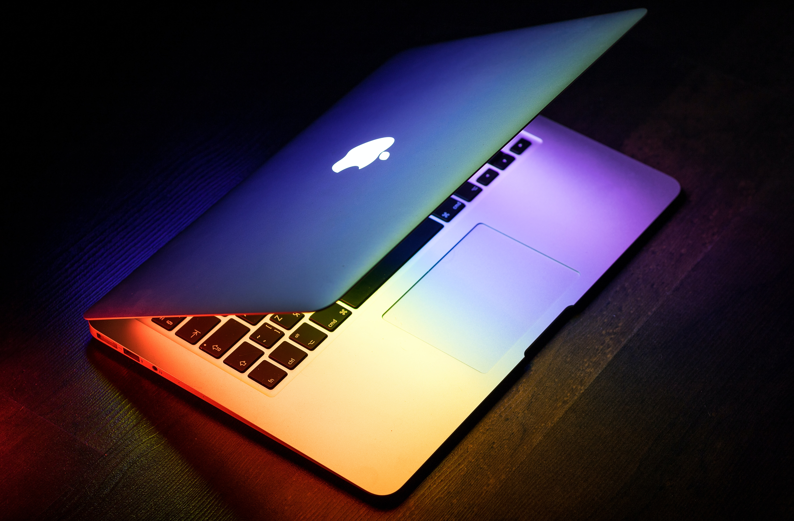
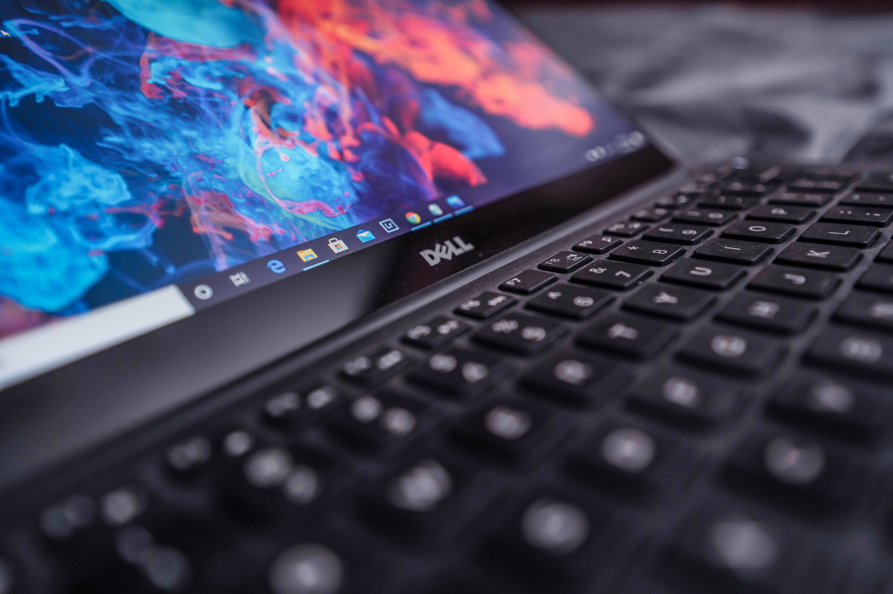
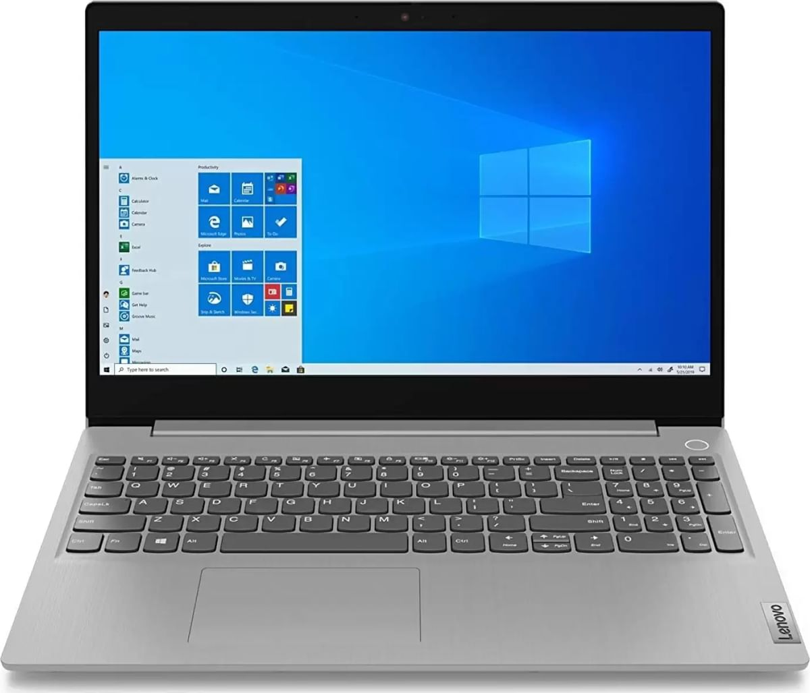
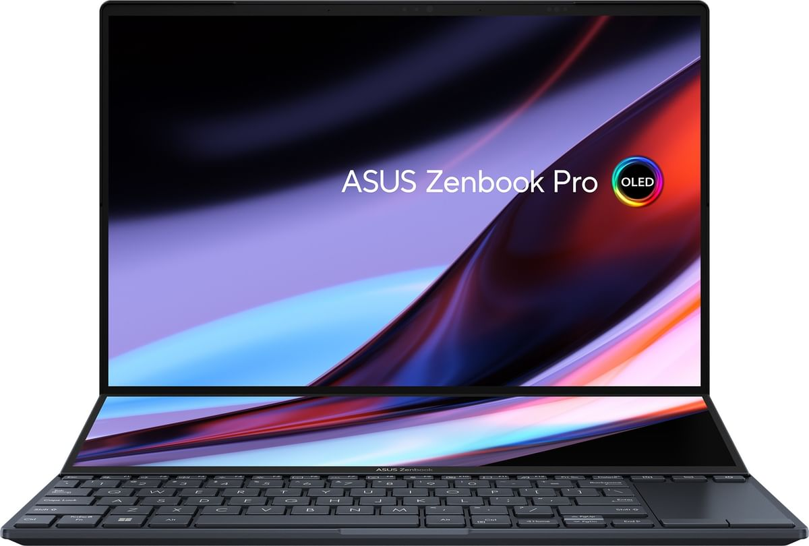

About Computers:
A computer is an electronic device that can store, process, and retrieve data. It is capable of performing a wide range of tasks, such as creating documents,
editing photos and videos, browsing the internet, playing games, and more.
A computer consists of various hardware components, including a central processing unit (CPU),
memory, storage devices, input/output devices, and a power supply.
The software programs and
operating systems that run on the computer allow users to perform different functions and tasks.
Computers are used in various fields, such as education, healthcare, finance, engineering,
entertainment, and more.
TO KNOW MORE ABOUT COMPUTERS Click on "About Computers"

Types of Computers:
Desktops:
Laptops:
Tablets:
Servers and Mainframes:
Desktop computers are a type of computer that is designed to be used on a desk or table.
They consist of a separate monitor, keyboard, and mouse, which are connected to the
computer's main processing unit (CPU) using cables. The CPU contains the computer's main
components, including the motherboard, processor, memory, and storage devices.
Desktop computers are typically more powerful than laptops or tablets, and they are
ideal for tasks that require a lot of processing power, such as video editing, gaming, and
3D modeling. They are also easier to upgrade and maintain than other types of computers,
as the components are usually easier to access and replace.
Desktop computers come in different sizes, from compact models that are designed to take up
less space to larger models that offer more processing power and storage capacity.
They can run various operating systems, such as Windows, macOS, and Linux, and they
are used in a wide range of industries, from education and healthcare to finance and
engineering.

Laptops are a type of portable computer that are designed to be used on the go. They
consist of a screen, keyboard, and touchpad (or external mouse), all housed in a single
unit. Laptops are powered by a rechargeable battery and can be used without being connected
to a power source.
Laptops come in different sizes, from smaller models with screens as small as 11 inches,
to larger models with screens up to 17 inches or more. They are also available in
different configurations, with varying amounts of processing power, memory, and storage
capacity.
One of the key advantages of laptops is their portability. They are lightweight and compact,
making them easy to carry around and use wherever you go. This makes them ideal for people
who need to work on the go, such as students, business travelers, and digital nomads.

Tablets are a type of portable computer that are similar to laptops but differ in some key ways.
They are typically smaller and lighter than laptops, and they are designed to be used primarily with
touch-based input, rather than a physical keyboard and mouse.
Tablets feature a touchscreen display and run on a mobile operating system, such as iOS
(for Apple iPads) or Android (for tablets from various manufacturers). They can be used for a
wide range of tasks, such as browsing the internet, watching videos, playing games, reading e-books,
and more. They are also capable of running various productivity apps, such as word processors,
spreadsheets, and presentation software.
One of the key advantages of tablets is their portability. They are lightweight and compact,
making them easy to carry around and use wherever you go. They are also great for consuming media,
such as movies, TV shows, and music, as they offer a larger screen than a smartphone but are still
small enough to be held comfortably in one hand.

Servers and Mainframes are two types of computers that are designed to handle large-scale
computing tasks and data processing.
Servers are specialized computers that are designed to provide services or resources
to other computers on a network. They can be used to host websites, store and manage data,
run applications, and more. Servers are typically more powerful than desktop computers
and may have multiple processors, large amounts of memory, and storage capacity.
Mainframes, on the other hand, are high-performance computers that are designed to handle
massive amounts of data processing and transactional processing. They are used by large
organizations, such as banks and insurance companies, to manage their critical data and
applications. Mainframes are typically large and expensive, and they may require
specialized cooling and power systems to operate.
Both servers and mainframes are designed for reliability, security, and scalability, and
they are capable of handling high workloads and processing large amounts of data. They
often run specialized operating systems and software, and they may require specialized
training to operate and maintain.
Overall, servers and mainframes are critical components of modern computing infrastructure,
providing the backbone for many of the services and applications that we use every day.
TO KNOW MORE ON TYPES OF COMPUTERS Click on "Types of Computers"
Computer Brands:
Apple
Dell
HPS
Lenovo
Asus
Apple is known for producing premium laptops that are sleek, stylish, and innovative. Their MacBook Air and MacBook Pro models are highly popular among creative professionals and students who value the macOS operating system and Apple's ecosystem of devices. In addition, Apple produces high-quality iPads, iPhones, and AirPods that are seamlessly integrated with their laptops.

Dell is another popular brand that has been in the laptop business for many years. They are known for producing high-quality laptops that are durable, reliable, and feature-packed. Dell laptops are popular among business users due to their long battery life, fast processing speeds, and robust security features. They also offer a wide range of laptops for consumers, including gaming laptops, 2-in-1s, and lightweight ultrabooks. Dell laptops are known for their high build quality, excellent customer service, and extensive warranty options, making them a popular choice for those who value reliability and support.

HP offers a range of reliable and affordable laptops that are versatile and well-suited for both personal and business use. The Pavilion, Envy, Spectre, Omen, Elite, and ZBook models cater to different needs and budgets, and HP is also a leading producer of printers and other peripherals.

Lenovo is a brand that is known for producing durable and business-oriented laptops that are built to withstand the rigors of daily use. The ThinkPad, IdeaPad, Yoga, and Legion models are highly reliable and offer innovative features such as 360-degree hinges, stylus support, and voice recognition. Lenovo has a global reach and offers a range of laptops that are affordable and customizable.

ASUS is a well-known brand in the world of laptops, and they have gained a reputation for producing reliable and high-performance devices. Their laptops are known for their sleek designs, long battery life, and impressive performance. ASUS laptops are popular among gamers and professionals alike, thanks to their powerful hardware, fast processing speeds, and top-of-the-line graphics cards. Whether you need a laptop for work, gaming, or multimedia purposes, ASUS has a wide range of options to choose from that can fit your needs and budget.

TO KNOW MORE ON "COMPUTER BRANDS" Click on the particular brands